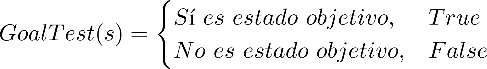
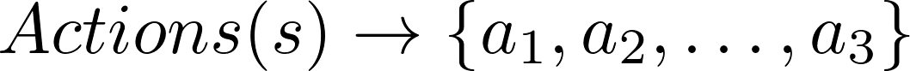

Las técnicas de búsqueda constituyen una parte fundamental de una gran variedad de aplicaciones de la inteligencia artificial. Básicamente se puede mencionar que las búsquedas se realizan de dos formas distintas (Schaeffer, 2004):
- Implícita (se realizan procesos de deducción en herramientas como sistemas expertos)
- Explícita (se aplican técnicas de búsqueda para afrontar problemas de optimización, juegos, planning, agentes inteligentes, Problemas NP-Completos, etc.).
Un problema en inteligencia artificial donde intervienen los algoritmos que realizan búsquedas a fin de encontrar soluciones, se define de la siguiente forma (Ertel, 2017):
- Estado: es la descripción de los aspectos más importantes del mundo real que son relevantes al problema que se quiere resolver. En este punto, es importante distinguir entre el estado del mundo real (contiene todos los detalles posibles) y el estado del modelo (contiene los detalles que son importantes para el problema de búsqueda). El estado se representará de la siguiente forma (donde el índice i indica qué número de estado es):
- Estado inicial: el estado del que el agente inteligente (que busca solucionar el problema) parte. Se representa de la siguiente forma:
- Estado objetivo: es el estado que el agente busca alcanzar y que contiene la solución. Para determinar si un estado s dado es el objetivo, se usa la siguiente función que devolverá verdadero de ser en caso positivo y falso en caso contrario:

- Acciones: es todo lo que puede hacer el agente inteligente a fin de llegar al estado objetivo. Se realizan sobre un estado s y se define como sigue:

- Solución: es el camino o ruta en el árbol de búsqueda desde el estado inicial al estado objetivo.
- Resultado: es una función que toma como parámetros un estado s y una acción a y devuelve como resultado un nuevo estado s':
- Función de coste: asigna un costo a cada acción posible. Esta función es clave para encontrar una solución óptima. En esta línea, debemos definir el coste del camino seguido para hallar la solución. Dado lo anterior, el coste del camino se define como sigue:

Donde i = 0, 1, 2, .... y j = 0, 1, 2, .... El coste del camino consiste en sumar el coste de los pasos individuales.
- Espacio de estados: conjunto de todos los estados posibles del problema.
A continuación revisaremos las definiciones de dos elementos fundamentales en un problema de búsqueda: los agentes inteligentes y el factor de ramificación.